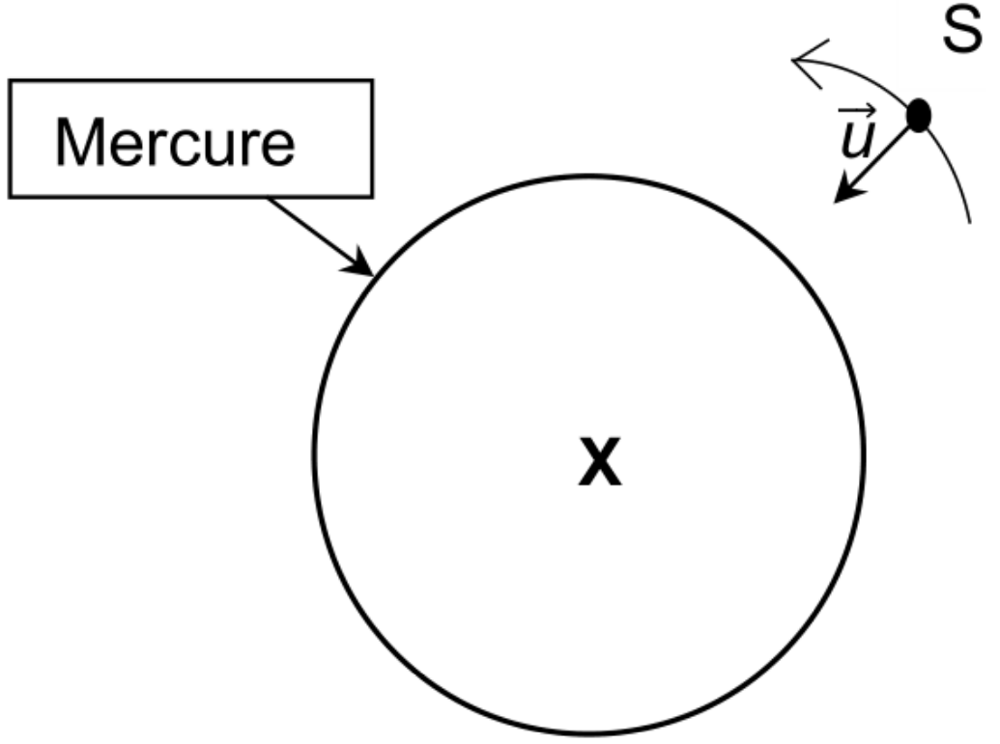

On réalise une pile formée à partir des couples / et /. Chaque
solution a pour volume \(V =
\SI{100}{mL}\) et la concentration initiale des ions positifs est
\(C =
\SI{5,0E-2}{\mole\per\liter}\).
Données :
Masse molaire du zinc : \(M(\ce{Zn}) = \SI{65,4}{\gram\per\mole}\)
Masse molaire du nickel : \(M(\ce{Ni}) = \SI{58,7}{\gram\per\mole}\)
Charge élémentaire de l’électron : \(e= \SI{-1,6E-19}{C}\)
Constante d’Avogadro : \(N_A = \SI{6,02E23}{\per\mole}\)
Constante de Faraday : \(F = \SI{9,65E4}{C}\)
Pour la réaction suivante : , la constante d’équilibre vaut \(K = 10^{18}\).
Réalisation de la pile
L’électrode positive de cette pile est l’électrode de nickel. Légender le schéma de la Figure 1 en annexe avec les termes suivants : électrode de nickel, électrode de zinc, pont salin, solution contenant des ions , solution contenant des ions .
Écrire les demi-équations des réactions se produisant aux électrodes. Préciser à chaque électrode s’il s’agit d’une oxydation ou d’une réduction.
Écrire l’équation de la réaction globale qui intervient quand la pile débite.
Calculer la valeur du quotient réactionnel initial \(Q_{r,i}\). Cette valeur est elle cohérente avec la polarité proposée ?
Étude de la pile
On fait débiter la pile dans un conducteur ohmique. Compléter le schéma de la Figure 1
Préciser sur ce schéma le sens du courant et le sens de déplacement des électrons dans le circuit extérieur.
Comment varie la concentration des ions positifs dans chacun des béchers ? En déduire l’évolution du quotient de réaction \(Q_r\).
Sachant que la masse des électrodes ne limite pas la réaction, pour quelle raison la pile s’arrêtera-t-elle de débiter ? Quelle est alors la valeur de \(Q_r\) ?
La réaction étant considérée totale, calculer l’avancement maximal \(x_{max}\) de la réaction.
Quelle relation existe-t-il entre \(x_{max}\) et la quantité de matière d’électrons qui ont circulé ?
En déduire la charge totale de la pile.
Planète la plus proche du Soleil, Mercure est longtemps restée mal
connue. En première approximation, sa trajectoire dans le référentiel
héliocentrique peut être considérée comme circulaire. Toutefois, de
toutes les planètes du Système ssolaire, c’est celle qui possède
l’orbite la plus excentrique. Sa distance au Soleil varie en effet de
0,31 ua à 0,4è ua. La vitesse orbitale de Mercure, qui vaut en moyenne
47 km s−1 varie quand même entre les valeurs extrèmes de
39 km s−1 et 59 km s−1.
Ce n’est que récement, entre mars 2011 et avril 2015, que la conde
américaine MESSENGER (MErcury, Surface, Space ENvironment, GEochemistry
and Ranging) a pu être saturée autour de Mercure. En complément d’autres
informations précieuses, la mission MESSENGER a permis de connaître avec
précision la masse de cette planète qui ne possède aucun satellite
naturel.
L’objectif de cet exercice est d’étudier le mouvement de Mercure autour
du Soleil et le mouvement de MESSENGER autour de Mercure. Dans la
première partir, on cherchera à déterminer la période de révolution de
Mercure. Dans la seconde partie, on cherchera à préciser la trajectoire
de MESSENGER.
Données :
Rayonn de Mercure : \(R_M =\) 2440 km
Unité astronomique : 1 ua = 1,5E11 m
Constante universelle de gravitation : \(G =\) 6,67E-11 m3 kg s−−2
Énoncer la première loi de Kepler, dite "loi des orbites". Représenter, sans soucis d’échelle, l’allure de la trajectoir de Mercure autour du Soleil. Le schéma fera apparaitre la position du Soleil et le demi-grand axe de l’orbite.
En vous appuyant sur le schéma réalisé et sur des informations tirées du texte introductif, montret par un calcul simple que le demi-grand axe vaut 0.39 ua.
Énoncer la deuxième loi de Kepler, dite "loi des aires". Appliquer cette loi pour déterminer dans quelle partie de sa trajectoir Mercure atteint la vitesse de 39 km s−1. Une justification claire, pour laquelle le schéma pourra être complété, est attendue.
La troisième loi de Kepler est souvent écrite sous la forme : \(\dfrac{r^2}{a^3} =k\), où la constante de
Kepler \(k\) évoque le mot allemant
"konstante".
Donnée :
Constante de Kepler pour le Système solaire : \(k =\) 2,9E-19 s2 m−3
Donner la signification des grandeurs \(T\) et \(a\) pour Mercure. À l’aide des données utiles et de la troisième loi de Kepler, justifier que cette planète parcourt l’ensemble de son orbite autour du Soleil en un peu moins de trois mois.
Une fois satellisée autour de Mercure, la conde MESSENGER a effectué
ses orbites avec une période de révolution \(T_S\) égale à 8.00 heures. Lors de son
passage au plus près de la surface de la planète, à son altitude \(h\) égale à 200 km, la sonde possédait une
accélération \(a_S\) de valeur
3.15 m s−2. On supposera que cette accélération était
uniquement due à l’attraction gravitationnelle de Mercure.
On rappelle l’expression de la force gravitationnelle exercée par un
corps \(A\) de masse \(m_A\) sur un corps \(B\) de masse \(m_B\) : \[\overrightarrow{F_{A/B}} = \frac{G\cdot m_A \cdot
m_B}{r^2} \cdot \vec{u}\] Dans cette expression \(\vec{u}\) est un vecteur unitaire orienté
de \(B\) vers \(A\) et \(r\) représente la distance entre les
centres de masse des corps.
Pour les questions suivantes, on pourra noter \(m_S\) la masse de la sonde, \(M\) la masse de Mercure et \(R_M\) son rayon.
La document 1 représente la conde MESSENGER (symbolisée
par son centre de masse \(S\)) se
déplaçant sur une portion de sa trajectoire à l’altitude \(h\).

Reproduire le schéma du document 1 pour le compléter en y faisant apparaitre sans soucis d’échelle :
les distances \(R_M\), \(h\) et \(r\)
le vecteur force gravitationnelle exercée par Mercure sur la sonde \(\vec{F_{M/S}}\)
le vecteur vitesse \(\vec{v_S}\) de la sonde
le vecteur accélération \(\vec{a_S}\) de la sonde
Énoncer la deuxième loi de Newton, pui l’appliquer au système MESSENGER dans le référentiel mercurocentrique considéré comme galiléen. En déduire l’expression du vecteur accélération \(\vec{a_S}\) de la sonde.
À l’aide des données utiles, montrer que la valeur de l’accélération mesurée à l’altitude \(h\) permet d’attribuer à la planète Mercure une masse \(M\) égale à 3,29E23 kg.
Ces lois de la gravitation et du mouvement ont permis à Newton d’établir l’expression de la constante de Kepler pour tout corps de masse \(m\) orbitant autour d’un astre attracteur de masse \(M\) (très supérieure à \(m\)): \(k = \dfrac{4\pi ^2}{G\cdot M}\).
En appliquant la troisième loi de Kepler au mouvement de la sonde Messenger autour de Mercure, calculer la valeur du demi-grand axe,\(a\), de son orbite. À l’aide de cette valeur, expliquer pourquoi la trajectoire de la sonde ne peut pas être considérée comme circulaire.